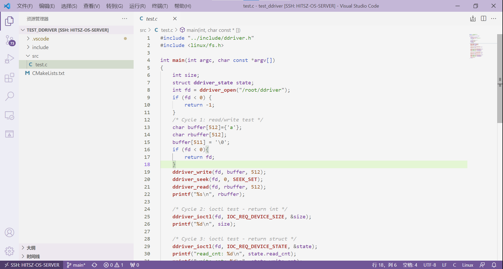
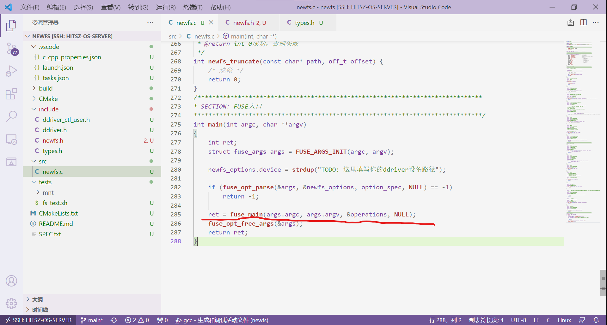
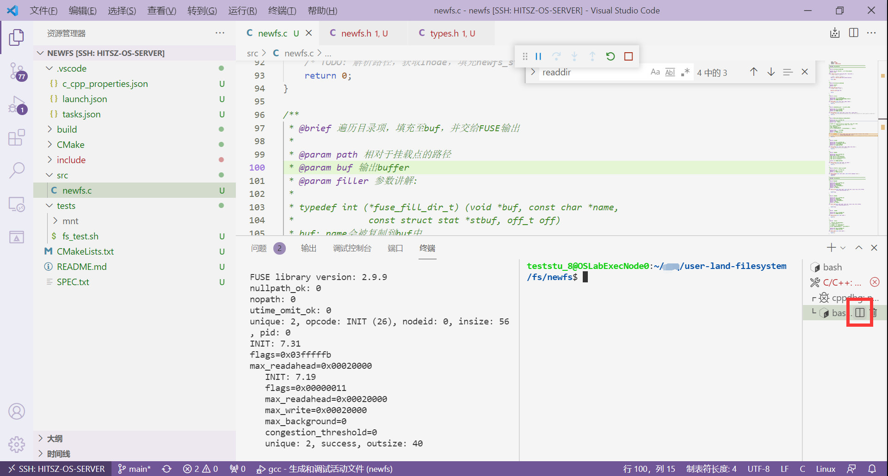
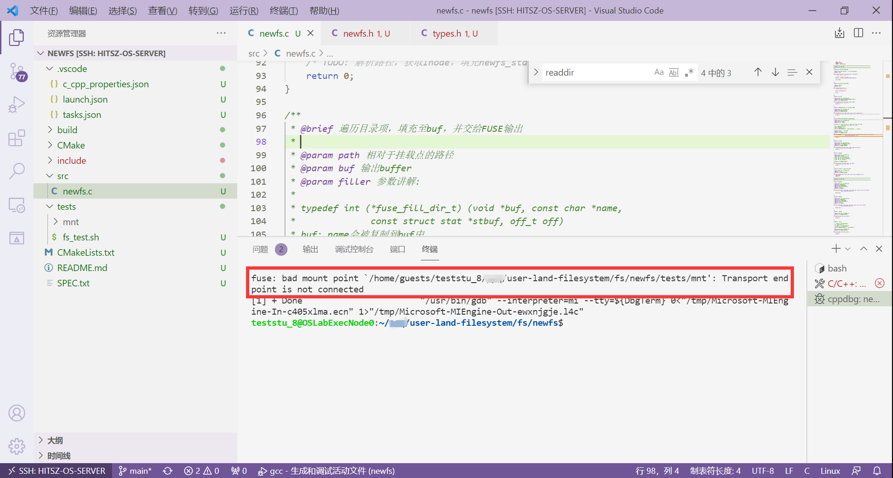
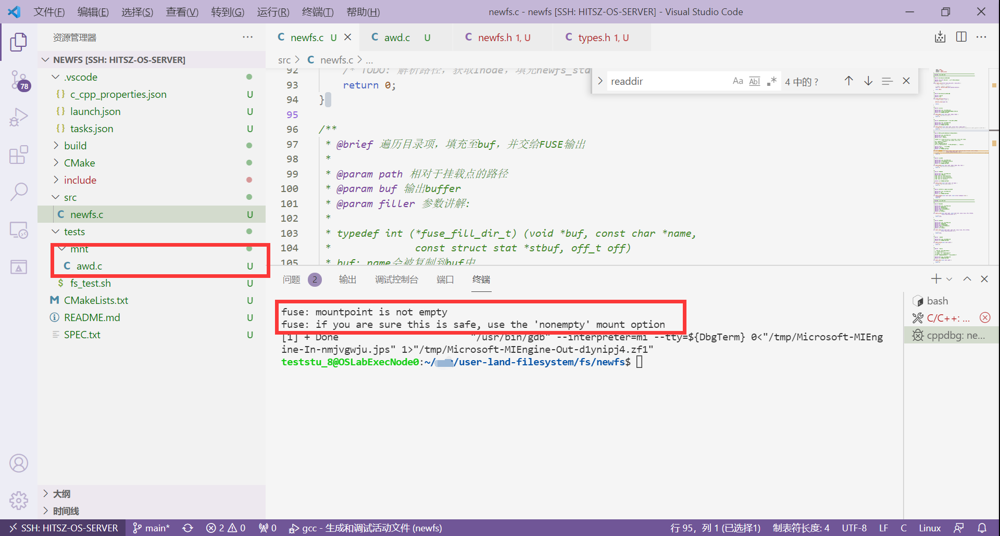

实验步骤¶
1. 环境搭建与上手¶
1.1 实验包结构介绍¶
本次实验充分考虑到 上手成本 ，因此我们编写了简单的环境配置脚本，帮助大家一键配置开发环境。实验包代码获取途径：
# git clone https://gitee.com/ftutorials/user-land-filesystem.git
实验包的结构如下：
user-land-filesystem/
├── driver
│ ├── ddriver.sh
│ ├── kernel_ddriver
│ └── user_ddriver
├── fs
│ ├── samples
│ ├── simplefs
│ └── template
├── LICENSE
├── README.md
├── setenv.sh
└── tests
├── README.md
└── test_ddriver
driver
存放驱动代码。其中kernel_ddriver为内核驱动，user_ddriver为用户驱动，ddriver.sh为控制 ddriver 驱动的脚本，可以运行如下命令尝鲜：
[root@localhost user-land-filesystem]# ./driver/ddriver.sh
fs
存放 实现的FUSE文件系统 。其中samples为myfs文件系统，simplefs为类EXT2文件系统（缺少数据位图），template用于生成文件系统的代码结构，可忽略。
LICENSE
开源许可，本实验遵循 GPL v3 开源许可。
tests
该文件夹存放DDRIVER用户驱动代码。
setenv.sh
用于配置FUSE文件系统开发环境。
1.2 配置开发环境¶
运行./setenv.sh后，即可按照指导一步一步来建立环境：
teststu_8@OSLabExecNode0:~/user-land-filesystem$ ./setenv.sh
请输入工作目录名称 ([工作]目录将被至于./fs目录下): newfs
...
生成工作路径: /home/guests/teststu_8/user-land-filesystem/fs/newfs
请输入项目名称: newfs
...
其中，工作目录名称即开发该文件系统的 文件夹名称 。可以看到，它在fs目录下新建了一个newfs目录作为工作目录。
接着，项目名称即真正的文件系统名称，可以是文件系统的简写，例如：nfs（代表newfs），这里要注意项目名不能有 特殊符号、空格 等。
项目建立完成之后的结构newfs如下所示：
./fs/newfs/
├── .vscode
├── CMake
│ └── FindFUSE.cmake
├── CMakeLists.txt
├── include
│ ├── ddriver_ctl_user.h
│ ├── ddriver.h
│ ├── newfs.h
│ └── types.h
├── README.md
├── SPEC.txt
├── src
│ └── newfs.c
└── tests
└── fs_test.sh
这个结构可以自行修改添加，不过要记得 重新配置CMake 。本次实验要求很简单， 跑过tests下的fs_test.sh就算完成 。
1.3 DDRIVER脚本的运用¶
为了方便对 ddriver 设备进行控制，我们将ddriver.sh脚本链接到了 Linux命令系统 中，接下来，大家先运行source ~/.bashrc，然后同学们就可以在任何目录下访问到ddriver.sh脚本。该脚本的主要用途如下：
teststu_8@OSLabExecNode0:~/$ source ~/.bashrc
teststu_8@OSLabExecNode0:~/$ ddriver
====================================================================
]]]]]]]] ]]]]]]]]
] ]] ] ]] ] ]] ]] ]] ]] ]-------] ] ]]
] ] ] ] ] ]] ]] ]] ]] ]_______/ ] ]]
] ]] ] ]] ]] ]] ] ] \ ]]
]]]]]]]] ]]]]]]]] ]] ]] ]] ]]]]]]]] ]]
====================================================================
用法: ddriver [options]
options:
-i [k|u] 安装ddriver: [k] - kernel / [u] - user
-t 测试ddriver[请忽略]
-d 导出ddriver至当前工作目录[PWD]
-r 擦除ddriver
-l 显示ddriver的Log
-v 显示ddriver的类型[内核模块 / 用户静态链接库]
-h 打印本帮助菜单
====================================================================
常用的功能是-v、-d与-r，它们的用途分别是 查看ddriver设备类型及设备位置 、 将ddriver设备镜像导出到当前目录下 、 将ddriver设备擦除干净 。用法如下：
====================================================================
# 查看设备位置和类型
teststu_8@OSLabExecNode0:~$ ddriver -v
静态链接库设备: /home/guests/teststu_8/ddriver
teststu_8@OSLabExecNode0:~$
====================================================================
# 将ddriver设备导出到当前目录下
teststu_8@OSLabExecNode0:~/$ ddriver -d
[sudo] password for teststu_8:
目标设备 /home/guests/teststu_8/ddriver
8192+0 records in
8192+0 records out
4194304 bytes (4.2 MB, 4.0 MiB) copied, 0.094218 s, 44.5 MB/s
文件已导出至/home/guests/teststu_8/ddriver_dump，请安装HexEditor插件查看其内容
teststu_8@OSLabExecNode0:~/$ ls
ddriver_dump
teststu_8@OSLabExecNode0:~/$
====================================================================
# 将ddriver设备擦除干净
teststu_8@OSLabExecNode0:~/$ ddriver -r
目标设备 /home/guests/teststu_8/ddriver
8192+0 records in
8192+0 records out
4194304 bytes (4.2 MB, 4.0 MiB) copied, 0.0506111 s, 82.9 MB/s
teststu_8@OSLabExecNode0:~/$ cat ./ddriver_dump
teststu_8@OSLabExecNode0:~/$
1.4 项目编译¶
项目编译的过程在新建项目的SPEC.txt文件中有所交代，这里提出来讲一讲：
- Step 1 . SSH打开
./fs/newfs。打开VSCode软件，点击左上角 "文件" → "打开文件夹"，选择实验包目录下的fs/newfs文件夹。

-
Step 2 . 打开CMakeLists.txt文件
-
Step 3 . ctrl + shift + p呼出命令菜单
-
Step 4 . 输入CMake: Configure
-
Step 5 . 查看Generator (已用!!!!!标记)

若 CMAKE_GENERATOR 为 Unix Makefiles ，请手动修改.vscode/tasks.json的command为make，若为 Ninja ，请手动修改.vscode/tasks.json的command为ninja，如下图所示：

-
Step 6 . 到
newfs/src/newfs.c目录，打断点 -
Step 7 . 按下F5进行调试

编译运行原理：
- 编译。 编译环节利用CMakeLists工程自动帮助我们编译，这里要安装CMake Tools等拓展，相信大家前面也装过了。其中，按下F5后，VSCode会首先运行
.vscode目录下tasks.json中的命令：

该命令执行的操作就是在CMakeLists生成的build目录下运行make，由此完成自动编译。
- 运行。 运行过程是在
.vscode目录下launch.json中定义：

把运行命令展开实际上是：
teststu_8@OSLabExecNode0:~/user-land-filesystem/fs/newfs$ ./build/newfs --device=/home/guests/teststu_8/ddriver -f -d -s ./tests/mnt/
正如我们前面 实验原理 - FUSE架构 中说到的那样， FUSE文件系统 的挂载不需要使用mount命令，而是直接用编译出来的二进制文件。上述命令的意义为： 将设备/home/guests/teststu_8/ddriver 以 newfs文件系统 形式， 挂载 到 ./tests/mnt目录 下。
进而衍生出 FUSE文件系统 的 卸载 ，同样，与传统内核文件系统卸载不同，它的卸载命令为：
teststu_8@OSLabExecNode0:~/user-land-filesystem/fs/newfs$ fusermount -u ./tests/mnt
teststu_8@OSLabExecNode0:~/user-land-filesystem/fs/newfs$
这里使用fusermount -u命令进行FUSE文件系统的卸载。
2. 任务一：熟悉DDRIVER驱动¶
任务一要求熟悉DDRIVER驱动，我们要求大家根据注释看懂user-land-filesystem/tests/test_ddriver/src/test.c的代码，并 根据提示 修改其中的 一处错误 ：

编译运行测试程序的步骤：
teststu_8@OSLabExecNode0:~/user-land-filesystem/tests/test_ddriver$ cmake CMakeLists.txt
...
teststu_8@OSLabExecNode0:~/user-land-filesystem/tests/test_ddriver$ make
...
teststu_8@OSLabExecNode0:~/user-land-filesystem/tests/test_ddriver$ ./ddriver_test
3. 任务二：基于FUSE实现青春版EXT2文件系统¶
熟悉了驱动后，我们也就基本掌握了访问 DDRIVER 设备的方法。接下来我们就可以基于FUSE来正式编写 青春版EXT2文件系统 了。我们已经在 环境配置 阶段就为大家搭建好了FUSE文件系统项目框架。
要接入一个框架，那么少不了钩子函数（也可称为 函数指针 ）。钩子函数 是一系列函数的抽象 ，从而让C语言具有多态的性质。对于FUSE框架，其给我们的接口 如下 。
struct fuse_operations {
int (*getattr) (const char *, struct stat *);
int (*readlink) (const char *, char *, size_t);
int (*getdir) (const char *, fuse_dirh_t, fuse_dirfil_t);
int (*mknod) (const char *, mode_t, dev_t);
int (*mkdir) (const char *, mode_t);
int (*unlink) (const char *);
int (*rmdir) (const char *);
int (*symlink) (const char *, const char *);
int (*rename) (const char *, const char *);
int (*link) (const char *, const char *);
int (*chmod) (const char *, mode_t);
int (*chown) (const char *, uid_t, gid_t);
int (*truncate) (const char *, off_t);
int (*utime) (const char *, struct utimbuf *);
int (*open) (const char *, struct fuse_file_info *);
int (*read) (const char *, char *, size_t, off_t,
struct fuse_file_info *);
int (*write) (const char *, const char *, size_t, off_t,
struct fuse_file_info *);
int (*statfs) (const char *, struct statvfs *);
int (*flush) (const char *, struct fuse_file_info *);
int (*release) (const char *, struct fuse_file_info *);
int (*fsync) (const char *, int, struct fuse_file_info *);
int (*setxattr) (const char *, const char *, const char *, size_t, int);
int (*getxattr) (const char *, const char *, char *, size_t);
int (*listxattr) (const char *, char *, size_t);
int (*removexattr) (const char *, const char *);
int (*opendir) (const char *, struct fuse_file_info *);
int (*readdir) (const char *, void *, fuse_fill_dir_t, off_t,
struct fuse_file_info *);
int (*releasedir) (const char *, struct fuse_file_info *);
int (*fsyncdir) (const char *, int, struct fuse_file_info *);
void *(*init) (struct fuse_conn_info *conn);
void (*destroy) (void *);
int (*access) (const char *, int);
int (*create) (const char *, mode_t, struct fuse_file_info *);
int (*ftruncate) (const char *, off_t, struct fuse_file_info *);
int (*fgetattr) (const char *, struct stat *, struct fuse_file_info *);
int (*lock) (const char *, struct fuse_file_info *, int cmd,
struct flock *);
int (*utimens) (const char *, const struct timespec tv[2]);
int (*bmap) (const char *, size_t blocksize, uint64_t *idx);
int (*ioctl) (const char *, int cmd, void *arg,
struct fuse_file_info *, unsigned int flags, void *data);
int (*poll) (const char *, struct fuse_file_info *,
struct fuse_pollhandle *ph, unsigned *reventsp);
int (*write_buf) (const char *, struct fuse_bufvec *buf, off_t off,
struct fuse_file_info *);
int (*read_buf) (const char *, struct fuse_bufvec **bufp,
size_t size, off_t off, struct fuse_file_info *);
int (*flock) (const char *, struct fuse_file_info *, int op);
int (*fallocate) (const char *, int, off_t, off_t,
struct fuse_file_info *);
};
以下面一行代码为例：
int (*mkdir) (const char *, mode_t);
这个钩子函数 抽象了所有 mkdir的操作：所有mkdir都需要接受一个参数作为 路径 、另一个参数作为 创建模式 （只读/只写/可读可写）。不同的文件系统可以基于此实现不同的mkdir代码，举个例子：
// 文件系统一实现mkdir
int mkdir(const char *path, mode_t mode) {
printf("我不给你创建 %s\n", path);
return 0;
}
// 文件系统二实现mkdir
int mkdir(const char *path, mode_t mode) {
dentry = lookup(path); // 查找路径，找到父级dentry
inode = new_inode(); // 创建该目录文件的inode
new_dentry = new_dentry(); // 创建属于该inode的dentry
bond(new_dentry, inode); // 让该dentry指向inode
add(dentry, new_dentry); // 将新创建的dentry加入到父级dentry对应的目录文件中
return 0;
}
FUSE框架 通过向fuse_main函数传入一个被复制的fuse_operations结构体即可完成操作的注册，从而使得文件系统能够按照我们既定的方式来处理命令。下图为 将操作接入FUSE的入口 ：

本次实验由于实现的功能较为简单，我们只要求同学们实现以下钩子（其中标记为 NULL 的在本次实验中不要求实现）：
// Line 21
static struct fuse_operations operations = {
.init = newfs_init, /* mount文件系统 */
.destroy = newfs_destroy, /* umount文件系统 */
.mkdir = newfs_mkdir, /* 建目录，mkdir */
.getattr = newfs_getattr, /* 获取文件属性，类似stat，必须完成 */
.readdir = newfs_readdir, /* 填充dentrys */
.mknod = newfs_mknod, /* 创建文件，touch相关 */
.write = NULL, /* 写入文件 */
.read = NULL, /* 读文件 */
.utimens = newfs_utimens, /* 修改时间，忽略，避免touch报错 */
.truncate = NULL, /* 改变文件大小 */
.unlink = NULL, /* 删除文件 */
.rmdir = NULL, /* 删除目录， rm -r */
.rename = NULL, /* 重命名，mv */
.open = NULL,
.opendir = NULL,
.access = NULL
};
先来看一下sfs文件系统给出的数据结构定义：
struct custom_options {
const char* device;//驱动的路径
boolean show_help;
};
struct sfs_inode /*内存中inode的数据结构*/
{
int ino; /* 在inode位图中的下标 */
int size; /* 文件已占用空间 */
int dir_cnt;
struct sfs_dentry* dentry; /* 指向该inode的dentry */
struct sfs_dentry* dentrys; /* 所有目录项 */
uint8_t* data;
};
struct sfs_dentry/*内存中目录项的数据结构*/
{
char fname[SFS_MAX_FILE_NAME];
struct sfs_dentry* parent; /* 父亲Inode的dentry */
struct sfs_dentry* brother; /* 兄弟 */
int ino;
struct sfs_inode* inode; /* 指向inode */
SFS_FILE_TYPE ftype;
};
struct sfs_super/*内存中超级块的数据结构*/
{
int driver_fd;
int sz_io;/*inode的大小*/
int sz_disk;/*磁盘大小*/
int sz_usage;
int max_ino;/*inode的数目*/
uint8_t* map_inode;/*inode位图*/
int map_inode_blks;/*inode位图所占的数据块*/
int map_inode_offset;/*inode位图的起始地址*/
int data_offset;/*数据块的起始地址*/
boolean is_mounted;
struct sfs_dentry* root_dentry;/*根目录*/
};
/******************************************************************************
* 磁盘中的数据结构
*******************************************************************************/
struct sfs_super_d
{
uint32_t magic_num;
int sz_usage;
int max_ino;
int map_inode_blks;
int map_inode_offset;
int data_offset;
};
struct sfs_inode_d
{
int ino; /* 在inode位图中的下标 */
int size; /* 文件已占用空间 */
int dir_cnt;
SFS_FILE_TYPE ftype;
};
struct sfs_dentry_d
{
char fname[SFS_MAX_FILE_NAME];
SFS_FILE_TYPE ftype;
int ino; /* 指向的ino号 */
};
接下来，我们再分别介绍各个操作实现要经过的钩子函数，以便让同学们有个更直观的理解。
3.1 挂载¶
当挂载FUSE文件系统时，会 执行的钩子 是.init，我们可以在.init钩子中完成 超级块的读取 、 位图的建立 、 驱动的初始化 等操作：
/**
* @brief 挂载（mount）文件系统
*
* @param conn_info 可忽略，一些建立连接相关的信息
* @return void*
*/
void* newfs_init(struct fuse_conn_info * conn_info) {
/* TODO: 在这里进行挂载 */
/* 下面是一个控制设备的示例 */
super.fd = ddriver_open(newfs_options.device);
return NULL;
}
newfs_options为自定义参数，这里我们不对 自定义参数 做更多的介绍，大家会用即可。
我们通过以下操作来实现挂载功能：
- Step 1 . 首先定义内存中的数据结构。
/*定义磁盘各部分结构*/
int ret = SFS_ERROR_NONE;
int driver_fd;
struct sfs_super_d sfs_super_d;
struct sfs_dentry* root_dentry;
struct sfs_inode* root_inode;
int inode_num;
int map_inode_blks;
int super_blks;
boolean is_init = FALSE;
sfs_super.is_mounted = FALSE;
- Step 2 . 打开驱动。
driver_fd = ddriver_open(options.device);/*打开驱动*/
if (driver_fd < 0) {
return driver_fd;
}
- Step 3 . 向内存超级块中标记驱动并写入磁盘大小和单次IO大小。
sfs_super.driver_fd = driver_fd;
ddriver_ioctl(SFS_DRIVER(), IOC_REQ_DEVICE_SIZE, &sfs_super.sz_disk);
ddriver_ioctl(SFS_DRIVER(), IOC_REQ_DEVICE_IO_SZ, &sfs_super.sz_io);
- Step 4 . 创建根目录项并读取磁盘超级块到内存。
if (driver_fd < 0) {
return driver_fd;
}
- Step 5 . 根据超级块幻数判断是否为第一次启动磁盘，如果是第一次启动磁盘，则需要建立磁盘超级块的布局。
if (sfs_super_d.magic_num != SFS_MAGIC_NUM) { /* 幻数无 */
/* 估算各部分大小 */
super_blks = SFS_ROUND_UP(sizeof(struct sfs_super_d), SFS_IO_SZ()) / SFS_IO_SZ();
inode_num = SFS_DISK_SZ() / ((SFS_DATA_PER_FILE + SFS_INODE_PER_FILE) * SFS_IO_SZ());
map_inode_blks = SFS_ROUND_UP(SFS_ROUND_UP(inode_num, UINT32_BITS), SFS_IO_SZ())
/ SFS_IO_SZ();
/* 布局layout */
sfs_super.max_ino = (inode_num - super_blks - map_inode_blks);
sfs_super_d.map_inode_offset = SFS_SUPER_OFS + SFS_BLKS_SZ(super_blks);
sfs_super_d.data_offset = sfs_super_d.map_inode_offset + SFS_BLKS_SZ(map_inode_blks);
sfs_super_d.map_inode_blks = map_inode_blks;
sfs_super_d.sz_usage = 0;
SFS_DBG("inode map blocks: %d\n", map_inode_blks);
is_init = TRUE;
}
- Step 6 . 初始化内存中的超级块，和根目录项。
sfs_super.sz_usage = sfs_super_d.sz_usage; /* 建立 in-memory 结构 */
sfs_super.map_inode = (uint8_t *)malloc(SFS_BLKS_SZ(sfs_super_d.map_inode_blks));
sfs_super.map_inode_blks = sfs_super_d.map_inode_blks;
sfs_super.map_inode_offset = sfs_super_d.map_inode_offset;
sfs_super.data_offset = sfs_super_d.data_offset;
if (sfs_driver_read(sfs_super_d.map_inode_offset, (uint8_t *)(sfs_super.map_inode),
SFS_BLKS_SZ(sfs_super_d.map_inode_blks)) != SFS_ERROR_NONE) {
return -SFS_ERROR_IO;
}
if (is_init) { /* 分配根节点 */
root_inode = sfs_alloc_inode(root_dentry);
sfs_sync_inode(root_inode);
}
root_inode = sfs_read_inode(root_dentry, SFS_ROOT_INO);
root_dentry->inode = root_inode;
sfs_super.root_dentry = root_dentry;
sfs_super.is_mounted = TRUE;
sfs_dump_map();
其中newz_dentry函数的作用是创建目录项，原型如下：
static inline struct sfs_dentry* new_dentry(char * fname, SFS_FILE_TYPE ftype) {
struct sfs_dentry * dentry = (struct sfs_dentry *)malloc(sizeof(struct sfs_dentry));
memset(dentry, 0, sizeof(struct sfs_dentry));
SFS_ASSIGN_FNAME(dentry, fname);
dentry->ftype = ftype;
dentry->ino = -1;
dentry->inode = NULL;
dentry->parent = NULL;
dentry->brother = NULL;
}
其中sfs_alloc_inode作用是为目录项创建inode节点，具体步骤可以分为以下几步：
①在inode位图上寻找未使用的inode节点。
for (byte_cursor = 0; byte_cursor < SFS_BLKS_SZ(sfs_super.map_inode_blks);
byte_cursor++)/*在inode位图上寻找未使用的inode*/
{
for (bit_cursor = 0; bit_cursor < UINT8_BITS; bit_cursor++) {
if((sfs_super.map_inode[byte_cursor] & (0x1 << bit_cursor)) == 0) {
/* 当前ino_cursor位置空闲 */
sfs_super.map_inode[byte_cursor] |= (0x1 << bit_cursor);
is_find_free_entry = TRUE;
break;
}
ino_cursor++;
}
if (is_find_free_entry) {
break;
}
}
②为目录项分配inode节点并建立他们之间的连接。
if (!is_find_free_entry || ino_cursor == sfs_super.max_ino)
return -SFS_ERROR_NOSPACE;
inode = (struct sfs_inode*)malloc(sizeof(struct sfs_inode));
inode->ino = ino_cursor;
inode->size = 0;
/* dentry指向inode */
dentry->inode = inode;
dentry->ino = inode->ino;
/* inode指回dentry */
inode->dentry = dentry;
inode->dir_cnt = 0;
inode->dentrys = NULL;
if (SFS_IS_REG(inode)) {
inode->data = (uint8_t *)malloc(SFS_BLKS_SZ(SFS_DATA_PER_FILE));
}
而sfs_read_inode函数作用是从磁盘中读取inode节点，具体步骤如下：
①通过磁盘驱动来将磁盘中ino号的inode读入内存。
if (sfs_driver_read(SFS_INO_OFS(ino), (uint8_t *)&inode_d,
sizeof(struct sfs_inode_d)) != SFS_ERROR_NONE) {
SFS_DBG("[%s] io error\n", __func__);
return NULL;
}
inode->dir_cnt = 0;
inode->ino = inode_d.ino;
inode->size = inode_d.size;
inode->dentry = dentry;
② 判断inode的文件类型，如果是目录类型则需要读取每一个目录项并建立连接。
/*判断iNode节点的文件类型*/
if (SFS_IS_DIR(inode)) {/*如果是目录的话需要将目录项建立连接*/
dir_cnt = inode_d.dir_cnt;
for (i = 0; i < dir_cnt; i++)
{
if (sfs_driver_read(SFS_DATA_OFS(ino) + i * sizeof(struct sfs_dentry_d),
(uint8_t *)&dentry_d,
sizeof(struct sfs_dentry_d)) != SFS_ERROR_NONE) {
SFS_DBG("[%s] io error\n", __func__);
return NULL;
}
sub_dentry = new_dentry(dentry_d.fname, dentry_d.ftype);
sub_dentry->parent = inode->dentry;
sub_dentry->ino = dentry_d.ino;
sfs_alloc_dentry(inode, sub_dentry);
}
}
③如果是文件类型直接读取数据即可。
else if (SFS_IS_REG(inode)) {/*文件类型直接读取数据即可*/
inode->data = (uint8_t *)malloc(SFS_BLKS_SZ(SFS_DATA_PER_FILE));
if (sfs_driver_read(SFS_DATA_OFS(ino), (uint8_t *)inode->data,
SFS_BLKS_SZ(SFS_DATA_PER_FILE)) != SFS_ERROR_NONE) {
SFS_DBG("[%s] io error\n", __func__);
return NULL;
}
}
3.2 获取文件属性¶
FUSE文件系统为了获得每个文件的状态 ，要不断调用getattr钩子，这个钩子函数类似于 xv6 里的 fstat 。实现ls、mkdir、touch等操作的前提就是完成getattr钩子的编写，这里给个例子：
①首先找到路径所对应的目录项。
struct sfs_dentry* dentry = sfs_lookup(path, &is_find, &is_root);
if (is_find == FALSE) {
return -SFS_ERROR_NOTFOUND;
}
②判断目录项的文件类型并对状态进行编写。
if (SFS_IS_DIR(dentry->inode)) {//如果是目录类型
sfs_stat->st_mode = S_IFDIR | SFS_DEFAULT_PERM;
sfs_stat->st_size = dentry->inode->dir_cnt * sizeof(struct sfs_dentry_d);
}
else if (SFS_IS_REG(dentry->inode)) {//如果是文件类型
sfs_stat->st_mode = S_IFREG | SFS_DEFAULT_PERM;
sfs_stat->st_size = dentry->inode->size;
}
sfs_stat->st_nlink = 1;
sfs_stat->st_uid = getuid();
sfs_stat->st_gid = getgid();
sfs_stat->st_atime = time(NULL);
sfs_stat->st_mtime = time(NULL);
sfs_stat->st_blksize = SFS_IO_SZ();
if (is_root) {
sfs_stat->st_size = sfs_super.sz_usage;
sfs_stat->st_blocks = SFS_DISK_SZ() / SFS_IO_SZ();
sfs_stat->st_nlink = 2; /* !特殊，根目录link数为2 */
}
return SFS_ERROR_NONE;
}
getattr的实现首先是 解析路径 ，从而获取相应文件的 inode或dentry ，接着填写struct stat*结构体即可。
其中sfs_lookup函数很重要，许多需要实现的钩子都需要用到它，它的作用是找到路径所对应的目录项，或者返回上一级目录项，原型如下：
①首先计算路径的级数，如果为0说明是根目录。
int total_lvl = sfs_calc_lvl(path);/*计算路径级数*/
...
if (total_lvl == 0) { /* 根目录 */
*is_find = TRUE;
*is_root = TRUE;
dentry_ret = sfs_super.root_dentry;
}
②不为0则需要从根目录开始，依次匹配路径中的目录项，直到找到文件所对应的目录项。
③如果没找到则返回最后一次匹配的目录项。
fname = strtok(path_cpy, "/"); /*分析路径函数，可以看一下它的用法*/
while (fname)
{
lvl++;
if (dentry_cursor->inode == NULL) { /* Cache机制 */
sfs_read_inode(dentry_cursor, dentry_cursor->ino);
}
inode = dentry_cursor->inode;
if (SFS_IS_REG(inode) && lvl < total_lvl) {
SFS_DBG("[%s] not a dir\n", __func__);
dentry_ret = inode->dentry;
break;
}
if (SFS_IS_DIR(inode)) {/*目录类型的文件需要将目录项和路径名进行比较*/
dentry_cursor = inode->dentrys;
is_hit = FALSE;
while (dentry_cursor)
{
if (memcmp(dentry_cursor->fname, fname, strlen(fname)) == 0) {
is_hit = TRUE;
break;
}
dentry_cursor = dentry_cursor->brother;
}
if (!is_hit) {
*is_find = FALSE;
SFS_DBG("[%s] not found %s\n", __func__, fname);
dentry_ret = inode->dentry;
break;
}
if (is_hit && lvl == total_lvl) {
*is_find = TRUE;
dentry_ret = dentry_cursor;
break;
}
}
fname = strtok(NULL, "/");
}
if (dentry_ret->inode == NULL) {
dentry_ret->inode = sfs_read_inode(dentry_ret, dentry_ret->ino);
}
return dentry_ret;
3.3 建立目录¶
当为FUSE文件系统创建目录时，会 执行的钩子 是.mkdir：
①寻找上级目录项。
②创建目录并建立连接。
/**
* @brief 创建目录
*
* @param path 相对于挂载点的路径
* @param mode 创建模式（只读？只写？），可忽略
* @return int 0成功，否则失败
*/
int sfs_mkdir(const char* path, mode_t mode) {
(void)mode;
boolean is_find, is_root;
char* fname;
struct sfs_dentry* last_dentry = sfs_lookup(path, &is_find, &is_root);//寻找上级目录项
struct sfs_dentry* dentry;
struct sfs_inode* inode;
if (is_find) {//目录存在
return -SFS_ERROR_EXISTS;
}
if (SFS_IS_REG(last_dentry->inode)) {
return -SFS_ERROR_UNSUPPORTED;
}
fname = sfs_get_fname(path);
dentry = new_dentry(fname, SFS_DIR);
dentry->parent = last_dentry;
inode = sfs_alloc_inode(dentry);
sfs_alloc_dentry(last_dentry->inode, dentry);
return SFS_ERROR_NONE;
}
3.4 建立文件¶
当为FUSE文件系统创建文件时，会 执行的钩子 是.mknod，在我们给的框架中，给了一个简单的思路：
/**
* @brief 创建文件
*
* @param path 相对于挂载点的路径
* @param mode 创建文件的模式，可忽略
* @param dev 设备类型，可忽略
* @return int 0成功，否则失败
*/
int newfs_mknod(const char* path, mode_t mode, dev_t dev) {
/* TODO: 解析路径，并创建相应的文件 */
return 0;
}
而在sfs文件系统中，对于这个钩子的具体实现如下：
①找到创建文件路径中所对应的目录项。
②如果文件存在则返回错误。
③文件不存在则在创建目录项和对应的inode，并和父目录项建立连接。
/**
* @brief 创建文件
*
* @param path 相对于挂载点的路径
* @param mode 创建文件的模式，可忽略
* @param dev 设备类型，可忽略
* @return int 0成功，否则失败
*/
int sfs_mknod(const char* path, mode_t mode, dev_t dev) {
boolean is_find, is_root;
struct sfs_dentry* last_dentry = sfs_lookup(path, &is_find, &is_root);//找到创建文件所在的目录
struct sfs_dentry* dentry;
struct sfs_inode* inode;
char* fname;
if (is_find == TRUE) {//文件存在
return -SFS_ERROR_EXISTS;
}
fname = sfs_get_fname(path);//获取文件名字
if (S_ISREG(mode)) {
dentry = new_dentry(fname, SFS_REG_FILE);
}
else if (S_ISDIR(mode)) {
dentry = new_dentry(fname, SFS_DIR);
}
dentry->parent = last_dentry;
inode = sfs_alloc_inode(dentry);
sfs_alloc_dentry(last_dentry->inode, dentry);
return SFS_ERROR_NONE;
}
但仅仅实现这个函数touch一个文件仍然会报错，这是因为touch要求不仅仅是创建文件，还要求可以 修改文件的访问时间 （难怪叫touch，摸一下），因此我们还要实现utimens钩子，这个钩子用于修改文件的访问时间（其实只需要返回0就好）。这个函数可以进一步完善，也可以不完善。
/**
* @brief 修改时间，为了不让touch报错
*
* @param path 相对于挂载点的路径
* @param tv 实践
* @return int 0成功，否则失败
*/
int newfs_utimens(const char* path, const struct timespec tv[2]) {
(void)path;
return 0;
}
3.5 读取目录项¶
当 在FUSE文件系统 下调用ls时，就会触发readdir钩子， readdir 在ls的过程中每次 仅会返回一个目录项 ，其中offset参数记录着当前应该返回的目录项：
/**
* @brief
*
* @param path
* @param buf
* @param filler 参数讲解:
*
* typedef int (*fuse_fill_dir_t) (void *buf, const char *name,
* const struct stat *stbuf, off_t off)
* buf: name会被复制到buf中
* name: dentry名字
* stbuf: 文件状态，可忽略
* off: 下一次offset从哪里开始，这里可以理解为第几个dentry
*
* @param offset
* @param fi
* @return int
*/
int sfs_readdir(const char * path, void * buf, fuse_fill_dir_t filler, off_t offset,
struct fuse_file_info * fi) {
boolean is_find, is_root;
int cur_dir = offset;
struct sfs_dentry* dentry = sfs_lookup(path, &is_find, &is_root);
struct sfs_dentry* sub_dentry;
struct sfs_inode* inode;
if (is_find) {
inode = dentry->inode;
sub_dentry = sfs_get_dentry(inode, cur_dir);
if (sub_dentry) {
filler(buf, sub_dentry->fname, NULL, ++offset);
}
return SFS_ERROR_NONE;
}
return -SFS_ERROR_NOTFOUND;
}
typedef int (*fuse_fill_dir_t) (void *buf, const char *name, const struct stat *stbuf, off_t off)
对各个参数做如下解释：
-
buf：name会被复制到buf中； -
xxxxxxxxxx /*** @brief 创建目录* * @param path 相对于挂载点的路径* @param mode 创建模式（只读？只写？），可忽略* @return int 0成功，否则失败*/int sfs_mkdir(const char* path, mode_t mode) { (void)mode; boolean is_find, is_root; char* fname; struct sfs_dentry* last_dentry = sfs_lookup(path, &is_find, &is_root);//寻找上级目录项 struct sfs_dentry* dentry; struct sfs_inode* inode; if (is_find) {//目录存在 return -SFS_ERROR_EXISTS; } if (SFS_IS_REG(last_dentry->inode)) { return -SFS_ERROR_UNSUPPORTED; } fname = sfs_get_fname(path); dentry = new_dentry(fname, SFS_DIR); dentry->parent = last_dentry; inode = sfs_alloc_inode(dentry); sfs_alloc_dentry(last_dentry->inode, dentry); return SFS_ERROR_NONE;}c
-
stbuf：文件状态，可忽略； -
off： 下一次offset从哪里开始，这里可以理解为第几个dentry；
因此，在上述代码中，我们调用filler(buf, fname, NULL, ++offset)表示将fname放入buf中，并使目录项偏移加一，代表下一次访问下一个目录项。
*补充思考：符号链接的实现¶
背景¶
- 符号链接（Symbolic Link），又称软链接（Soft Link），它包含了到原文件的路径信息，拥有自己的索引节点（inode）及文件属性及权限。
- 硬链接（Hard Link），是对原文件起了一个别名。文件有相同的 inode 及 data block。
详细区别请自行查阅资料
符号链接的实现方式¶
由符号链接的原理可得，建立符号链接的关键是存储链接目标文件的路径信息。
由此引出符号链接的两种实现方式：
- 将路径信息存储在inode节点中
- 将路径信息存储在data block中
样例SimpleFS中的实现，将路径信息存储于inode节点中，对于存储在data block中的实现方式，可以自行自考并实现。
符号链接的实现细节¶
- 由于样例是将符号链接的路径信息存储于inode节点中，故需要首先修改
struct inode和struct inode_d
# 添加target_path用于存储路径信息
char target_path[SFS_MAX_FILE_NAME];
并由此需要增加sfs_utils.c中，sfs_sync_inode() 及 sfs_read_inode()，对内存inode及磁盘inode间拷贝操作时的补充拷贝。
同时，在文件类型enum sfs_file_type中增加SFS_SYM_LINK
- FUSE文件系统为支持符号链接，需要实现**
symlink**钩子
首先，由于符号链接本质是一个特殊类型的文件，需要调用mknod()创建新的节点，将此dentry / inode节点标记位符号链接型节点，并将链接的路径信息拷贝至inode节点中。
/**
* @brief
*
* @param path - Where the link points
* @param link - The link itself
* @return int
*/
int sfs_symlink(const char* path, const char* link){
int ret = SFS_ERROR_NONE;
boolean is_find, is_root;
ret = sfs_mknod(link, S_IFREG, NULL);
struct sfs_dentry* dentry = sfs_lookup(link, &is_find, &is_root);
if (is_find == FALSE) {
return -SFS_ERROR_NOTFOUND;
}
dentry->ftype = SFS_SYM_LINK;
struct sfs_inode* inode = dentry->inode;
memcpy(inode->target_path, path, SFS_MAX_FILE_NAME);
return ret;
}
- FUSE文件系统为支持链接，需要实现**
readlink**钩子
readlink即将path对应的符号链接型文件所指向的链接路径信息拷贝至buf中，以实现对对应链接文件的一系列操作。
/**
* @brief
*
* @param path
* @param buf
* @param size
* @return int
*/
int sfs_readlink (const char *path, char *buf, size_t size){
/* SFS 暂未实现硬链接，只支持软链接 */
boolean is_find, is_root;
ssize_t llen;
struct sfs_dentry* dentry = sfs_lookup(path, &is_find, &is_root);
if (is_find == FALSE) {
return -SFS_ERROR_NOTFOUND;
}
if (dentry->ftype != SFS_SYM_LINK){
return -SFS_ERROR_INVAL;
}
struct sfs_inode* inode = dentry->inode;
llen = strlen(inode->target_path);
if(size < 0){
return -SFS_ERROR_INVAL;
}else{
if(llen > size){
strncpy(buf, inode->target_path, size);
buf[size] = '\0';
}else{
strncpy(buf, inode->target_path, llen);
buf[llen] = '\0';
}
}
return SFS_ERROR_NONE;
}
- 为了能成功读取符号链接型文件的状态和权限，还需要修改
sfs_getattr()
# 添加如下分支判断
else if (SFS_IS_SYM_LINK(dentry->inode)) {
sfs_stat->st_mode = S_IFLNK | SFS_DEFAULT_PERM;
sfs_stat->st_size = dentry->inode->size;
}
3.6 卸载¶
当卸载FUSE文件系统时，会 执行的钩子 是.destroy，我们可以在.destroy钩子中完成 超级块回写设备 、 驱动的关闭 、 更多必要结构的回写 等操作，以保证下一次挂载能够 恢复ddriver设备中的数据 ：
/**
* @brief 卸载（umount）文件系统
*
* @param p 可忽略
* @return void
*/
void newfs_destroy(void* p) {
/* TODO: 在这里进行卸载 */
ddriver_close(super.fd);
return;
}
上面的示例是关闭驱动设备。
下面我们来看看sfs文件系统中对于卸载的具体实现步骤：
①从根节点递归往下刷写根节点。
sfs_sync_inode(sfs_super.root_dentry->inode); /* 从根节点向下刷写节点 */
②将内存超级块转换为磁盘超级块并写入磁盘。
sfs_super_d.magic_num = SFS_MAGIC_NUM;
sfs_super_d.map_inode_blks = sfs_super.map_inode_blks;
sfs_super_d.map_inode_offset = sfs_super.map_inode_offset;
sfs_super_d.data_offset = sfs_super.data_offset;
sfs_super_d.sz_usage = sfs_super.sz_usage;
if (sfs_driver_write(SFS_SUPER_OFS, (uint8_t *)&sfs_super_d,
sizeof(struct sfs_super_d)) != SFS_ERROR_NONE) {
return -SFS_ERROR_IO;
}
③将inode位图写入磁盘。
if (sfs_driver_write(sfs_super_d.map_inode_offset, (uint8_t *)(sfs_super.map_inode),
SFS_BLKS_SZ(sfs_super_d.map_inode_blks)) != SFS_ERROR_NONE) {
return -SFS_ERROR_IO;
}
free(sfs_super.map_inode);
④关闭驱动。
ddriver_close(SFS_DRIVER());
其中最重要的函数是sfs_sync_inode，其作用是将内存inode及其下方结构全部刷回磁盘，操作流程如下：
①首先将inode写入磁盘。
if (sfs_driver_write(SFS_INO_OFS(ino), (uint8_t *)&inode_d,
sizeof(struct sfs_inode_d)) != SFS_ERROR_NONE) {
SFS_DBG("[%s] io error\n", __func__);
return -SFS_ERROR_IO;
}
②判断inode文件类型。
③如果是目录类型则需要首先将目录项写入磁盘，再递归刷写每一个目录项所对应的inode节点。
/* Cycle 1: 写 INODE */
/* Cycle 2: 写 数据 */
if (SFS_IS_DIR(inode)) {
dentry_cursor = inode->dentrys;
offset = SFS_DATA_OFS(ino);
while (dentry_cursor != NULL)
{
memcpy(dentry_d.fname, dentry_cursor->fname, SFS_MAX_FILE_NAME);
dentry_d.ftype = dentry_cursor->ftype;
dentry_d.ino = dentry_cursor->ino;
if (sfs_driver_write(offset, (uint8_t *)&dentry_d,
sizeof(struct sfs_dentry_d)) != SFS_ERROR_NONE) {
SFS_DBG("[%s] io error\n", __func__);
return -SFS_ERROR_IO;
}
if (dentry_cursor->inode != NULL) {/*递归刷写节点*/
sfs_sync_inode(dentry_cursor->inode);
}
dentry_cursor = dentry_cursor->brother;
offset += sizeof(struct sfs_dentry_d);
}
}
④如果是文件类型，则将inode所指向的数据直接写入磁盘。
else if (SFS_IS_REG(inode)) {
if (sfs_driver_write(SFS_DATA_OFS(ino), inode->data,
SFS_BLKS_SZ(SFS_DATA_PER_FILE)) != SFS_ERROR_NONE) {
SFS_DBG("[%s] io error\n", __func__);
return -SFS_ERROR_IO;
}
}
3.7 文件读¶
当读取文件时，就会用到read钩子，这个钩子在复制文件时也会用到，他通过下面的步骤来完成一次对文件的读取：
①首先找到文件的目录项：
struct sfs_dentry* dentry = sfs_lookup(path, &is_find, &is_root);
②找到目录项之后判断文件类型，保证是文件类型并且文件大小要大于所要读取的偏移量：
if (SFS_IS_DIR(inode)) {
return -SFS_ERROR_ISDIR;
}
if (inode->size < offset) {
return -SFS_ERROR_SEEK;
}
③之后将数据读入内存块即可：
memcpy(buf, inode->data + offset, size);
3.8 文件写¶
写文件是，用到write钩子，它向文件所在的磁盘位置中写入数据：
①和读文件一样，首先找到路径所对应的目录项：
struct sfs_dentry* dentry = sfs_lookup(path, &is_find, &is_root);
②之后保证文件类型不是目录以及保证文件大小大于偏移量：
if (SFS_IS_DIR(inode)) {
return -SFS_ERROR_ISDIR;
}
if (inode->size < offset) {
return -SFS_ERROR_SEEK;
}
③将内存中数据复制到对应位置即可，并改写iNode节点的大小：
memcpy(inode->data + offset, buf, size);
inode->size = offset + size > inode->size ? offset + size : inode->size;
3.2 卸载¶
当卸载FUSE文件系统时，会 执行的钩子 是.destroy，我们可以在.destroy钩子中完成 超级块回写设备 、 驱动的关闭 、 更多必要结构的回写 等操作，以保证下一次挂载能够 恢复ddriver设备中的数据 ：
/**
* @brief 卸载（umount）文件系统
*
* @param p 可忽略
* @return void
*/
void newfs_destroy(void* p) {
/* TODO: 在这里进行卸载 */
ddriver_close(super.fd);
return;
}
上面的示例是关闭驱动设备。
3.3 获取文件属性¶
FUSE文件系统为了获得每个文件的状态 ，要不断调用getattr钩子，这个钩子函数类似于 xv6 里的 fstat 。实现ls、mkdir、touch等操作的前提就是完成getattr钩子的编写，这里给个例子：
/**
* @brief 获取文件属性
*
* @param path 相对于挂载点的路径
* @param sfs_stat 返回状态
* @return int
*/
int sfs_getattr(const char* path, struct stat * sfs_stat) {
boolean is_find, is_root;
struct sfs_dentry* dentry = sfs_lookup(path, &is_find, &is_root);
...
if (SFS_IS_DIR(dentry->inode)) {
sfs_stat->st_mode = S_IFDIR | SFS_DEFAULT_PERM;
sfs_stat->st_size = dentry->inode->dir_cnt * sizeof(struct sfs_dentry_d);
}
else if (SFS_IS_REG(dentry->inode)) {
sfs_stat->st_mode = S_IFREG | SFS_DEFAULT_PERM; /* SFS_DEFAULT_PERM 0777 */
sfs_stat->st_size = dentry->inode->size;
}
sfs_stat->st_nlink = 1;
sfs_stat->st_uid = getuid();
sfs_stat->st_gid = getgid();
sfs_stat->st_atime = time(NULL);
sfs_stat->st_mtime = time(NULL);
sfs_stat->st_blksize = SFS_IO_SZ();
if (is_root) {
sfs_stat->st_size = sfs_super.sz_usage;
sfs_stat->st_blocks = SFS_DISK_SZ() / SFS_IO_SZ();
sfs_stat->st_nlink = 2; /* !特殊，根目录link数为2 */
}
return SFS_ERROR_NONE;
}
getattr的实现首先是 解析路径 ，从而获取相应文件的 inode或dentry ，接着填写struct stat*结构体即可。
3.4 建立文件¶
当为FUSE文件系统创建文件时，会 执行的钩子 是.mknod，在我们给的框架中，给了一个简单的思路：
/**
* @brief 创建文件
*
* @param path 相对于挂载点的路径
* @param mode 创建文件的模式，可忽略
* @param dev 设备类型，可忽略
* @return int 0成功，否则失败
*/
int newfs_mknod(const char* path, mode_t mode, dev_t dev) {
/* TODO: 解析路径，并创建相应的文件 */
return 0;
}
但仅仅实现这个函数touch一个文件仍然会报错，这是因为touch要求不仅仅是创建文件，还要求可以 修改文件的访问时间 （难怪叫touch，摸一下），因此我们还要实现utimens钩子，这个钩子用于修改文件的访问时间（其实只需要返回0就好）。这个函数可以进一步完善，也可以不完善。
/**
* @brief 修改时间，为了不让touch报错
*
* @param path 相对于挂载点的路径
* @param tv 实践
* @return int 0成功，否则失败
*/
int newfs_utimens(const char* path, const struct timespec tv[2]) {
(void)path;
return 0;
}
3.5 建立目录¶
当为FUSE文件系统创建目录时，会 执行的钩子 是.mkdir：
/**
* @brief 创建目录
*
* @param path 相对于挂载点的路径
* @param mode 创建模式（只读？只写？），可忽略
* @return int 0成功，否则失败
*/
int newfs_mkdir(const char* path, mode_t mode) {
/* TODO: 解析路径，创建目录 */
return 0;
}
3.6 读取目录项¶
当 在FUSE文件系统 下调用ls时，就会触发readdir钩子， readdir 在ls的过程中每次 仅会返回一个目录项 ，其中offset参数记录着当前应该返回的目录项：
int sfs_readdir(const char * path, void * buf, fuse_fill_dir_t filler, off_t offset,
struct fuse_file_info * fi) {
boolean is_find, is_root;
int cur_dir = offset;
...
if (is_find) {
...
dentry = sfs_get_dentry(inode, cur_dir);
if (dentry) {
filler(buf, fname, NULL, ++offset);
}
return SFS_ERROR_NONE;
}
return -SFS_ERROR_NOTFOUND;
}
其中最重要的 filler 函数， filler 函数原型如下：
typedef int (*fuse_fill_dir_t) (void *buf, const char *name, const struct stat *stbuf, off_t off)
对各个参数做如下解释：
buf：name会被复制到buf中；name：dentry名字；stbuf：文件状态，可忽略；off： 下一次offset从哪里开始，这里可以理解为第几个dentry；
因此，在上述代码中，我们调用filler(buf, fname, NULL, ++offset)表示将fname放入buf中，并使目录项偏移加一，代表下一次访问下一个目录项。
4. 实现建议¶
4.1 参考代码¶
本次实验可以参考两个完全搭建好的FUSE文件系统：simplefs（fs/simplefs文件夹下）和myfs（fs/samples文件夹下），其中simplefs是一个类EXT2的文件系统，但 没有给予数据位图 的实现；myfs是github上的一个开源项目，也是一个FUSE文件系统实例。
4.2 实现步骤建议¶
-
封装对 ddriver 的访问代码，方便设备读写；（注意驱动读写IO为512B，但是EXT2文件系统一个块大小为1024B，也就是两个IO单位）
-
设计介质数据结构（位于
types.h）； -
设计内存数据结构（可设计、可不设计）；
-
完成
.init钩子：读 超级块 、初始化文件系统； -
完成
.destroy钩子： 回写必要结构 ，保证下一次挂载正常； -
验证挂载卸载流程的正确性（ 主要看读写是否正确 ）；
-
完成工具函数（可自行设计）：
- 完成 分配inode 函数：创建一个Inode、初始化其上的字段、修改位图结构，可能还需要修改超级块；
- 完成 分配dentry 函数：创建一个dentry、初始化其上的字段；
- 完成将 dentry加入到inode 中的函数：将生成的dentry写入到inode中；
- 完成 路径解析函数 ，要么返回dentry，要么返回inode，可自行设计；
-
根据工具函数，完成
.get_attr钩子； -
根据工具函数，完成
.mknod钩子； -
根据工具函数，完成
.mkdir钩子； -
根据工具函数，完成
.readdir钩子； -
手工测试
touch、ls、mkdir、fusermount -u等命令的正确性； -
通过
./tests/fs_test.sh脚本
5. 常见问题¶
5.1 如何调试？¶
常见问题1: 如何调试？
按下F5后，文件系统运行为前台模式，那么如何输入命令呢？事实上，可以ctrl + shift +｀呼出另一个终端，然后在另一个终端操作。

另外，如下图所示，可以按这个 拆分键 ，就可以同时显示两个终端了。

5.2 挂载失败？¶
常见问题2: 挂载失败？fuse: bad mount point
如下图所示：

这种情况就是不正常的卸载文件系统，我们显式地调用 卸载文件系统 即可：
teststu_8@OSLabExecNode0:~/pyq/user-land-filesystem/fs/newfs$ fusermount -u ./tests/mnt
teststu_8@OSLabExecNode0:~/pyq/user-land-filesystem/fs/newfs$
5.3 挂载点不空？¶
常见问题3: 挂载点不空？mountpoint is not empty
如下图所示：

这种情况就是在测试的时候，不小心给mnt文件夹下创建了一个文件，导致错误发生，把 文件删除 就行。